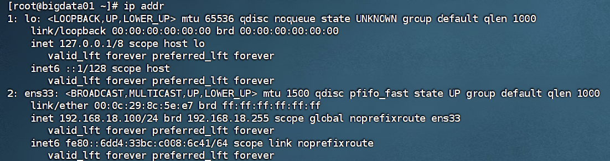
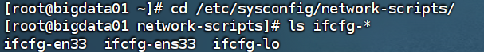

修改Centos虚拟机ip
在 CentOS 虚拟机中，通过修改网卡配置文件可手动指定固定的静态 IP 地址，替代由 DHCP 自动分配的临时地址，使虚拟机的网络地址长期保持不变。
核心做法是编辑
/etc/sysconfig/network-scripts/目录下对应的ifcfg-<网卡名>文件并设置静态参数，**从而实现 IP 地址的永久固化，避免重启后地址漂移**。
传统 DHCP 方式每次分配到的 IP 可能变化，导致远程连接、服务映射频繁失效；改为静态 IP 后，虚拟机地址稳定，便于固定访问与运维管理。
1. 概述
在 CentOS 虚拟机中，网络接口的 IP 地址既可以由 DHCP 自动分配，也可以由管理员手动设置为静态 IP。本文介绍通过编辑网卡配置文件的方式，为 CentOS 虚拟机配置永久静态 IP，适用于需要固定地址进行远程访问、服务部署与运维管理的场景。
**适用场景** 当虚拟机需要长期对外提供稳定访问地址（如作为服务器、数据库节点）时，应优先使用静态 IP 而非 DHCP 动态分配。
2. 操作步骤
2.1 查看网卡名
在修改配置前，先确认当前系统使用的网卡名称（如 ens33、eth0 等）。
ip addr
# 或
nmcli device status
2.2 进入配置目录
网卡配置文件位于 /etc/sysconfig/network-scripts/ 目录下，命名格式为 ifcfg-<网卡名>。
cd /etc/sysconfig/network-scripts/
ls ifcfg-*
2.3 编辑网卡文件
以网卡 ens33 为例，使用 vi 编辑对应的网卡文件。
vi ifcfg-ens332.4 修改 / 添加静态 IP 参数
在网卡文件中修改或添加以下内容，将 IP 分配方式设为静态，并指定地址、掩码、网关与 DNS。
BOOTPROTO=static # dhcp 改为 static
ONBOOT=yes # 开机自启
IPADDR=192.168.1.100 # 你要设的IP
NETMASK=255.255.255.0 # 子网掩码（或 PREFIX=24）
GATEWAY=192.168.1.1 # 网关
DNS1=114.114.114.114 # DNS
DNS2=8.8.8.82.5 重启网络服务
修改保存后，重启网络服务使配置生效（以下命令适用于 CentOS 7）。
systemctl restart network2.6 验证配置
重启后查看网卡地址，并测试与网关及外网的连通性。
ip addr
ping 网关
ping www.baidu.com3. 配置参数说明
下表列出了网卡配置文件中常用的静态 IP 相关参数及其含义：
| 项目 | 说明 |
|---|---|
BOOTPROTO=static |
将 dhcp 改为 static，表示使用静态 IP 而非动态分配 |
ONBOOT=yes |
设置网卡开机自启 |
IPADDR |
你要设置的固定 IP 地址，例如 192.168.1.100 |
NETMASK |
子网掩码，例如 255.255.255.0（也可使用 PREFIX=24） |
GATEWAY |
网关地址，例如 192.168.1.1 |
DNS1 |
首选 DNS 服务器，例如 114.114.114.114 |
DNS2 |
备用 DNS 服务器，例如 8.8.8.8 |
**提示** 修改配置前建议先备份原网卡文件（如 `cp ifcfg-ens33 ifcfg-ens33.bak`），若配置错误导致网络不可用，可快速回滚。
一句话总结：在 CentOS 虚拟机中通过编辑
/etc/sysconfig/network-scripts/下的网卡配置文件并设置静态 IP 参数，可实现固定 IP 地址的永久生效。